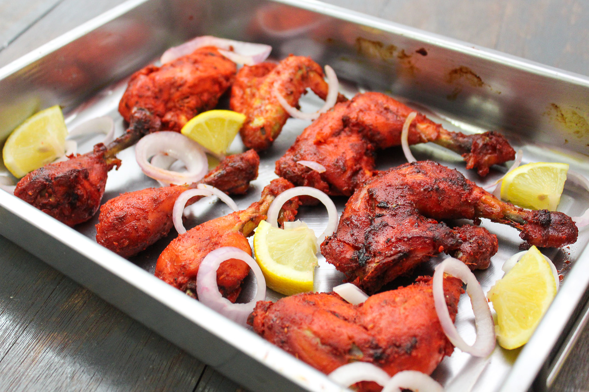

Ayam Tandoori adalah masakan Punjabi yang berasal dari Punjab dan keberadaannya dapat ditelusuri hingga zaman Kesultanan Mughal di Asia Selatan. Makanan ini masih menjadi makanan popular di daerah tersebut dan juga di Asia Tengah.

Daging ayam untuk masakan ini pertama-tama direndam adonan susu asam kental yang telah dibumbui dengan garam masala - bawang putih, jahe, cabai dan macam-macam lada India tergantung dari resep rasa yang diinginkan. Biasanya masakan ini disuguhkan pedas, tetapi kemudian dijadikan tidak pedas sesuai dengan cita rasa negara-negara Barat. Lada merah, bubuk cabai dan bumbu-bumbu lainnya memberikan warna merah pada daging ayam. Kunir (kunyit) memberikan warna oranye kekuningan. Sejalan dengan modernisasi, warna merah dan kuning ini adalah hasil dari pewarna makanan.
Ayam Tandoori secara tradisional dimasak dalam oven bawah tanah (yang disebut tandoor di India) dengan suhu tinggi. Tapi, sekali lagi karena kemajuan zaman, masakan ini bisa disiapkan hanya dengan menggunakan panggangan biasa.
